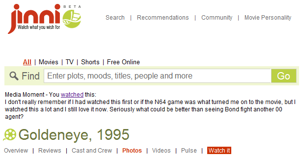

Broswer Extension
Choose your browser to install
Only the Chrome extension will be updated going forward.
Installing a browser extension/addon allows you to integrate this site's
data with the following external sites:
- The extension adds a link and shows whether you've watched the movie and your comments if any:
- IMDb - Unseen movie
- IMDb
- Netflix
- Rotten Tomatoes
- Jinni

- South Park Studios - Unfortunately, adding content anywhere lower than the top breaks their layout in an unexceptable way.
- Google Movies - Only adds Rotten Tomatoes and Media Moment links.
- Highlight movies you've seen on IMDb pages. As you browse IMDb with
the broswer extension installed, movies you've marked as seen will stand
out as a different color.
- For movies where the association to an IMDb ID is unknown, a link to search IMDb is provided.
- Adding
 Jinni links.
As you browse Jinni
with this extension, links will be reported back to the site so we can
associate the IMDb ID to the link.
Jinni links.
As you browse Jinni
with this extension, links will be reported back to the site so we can
associate the IMDb ID to the link.